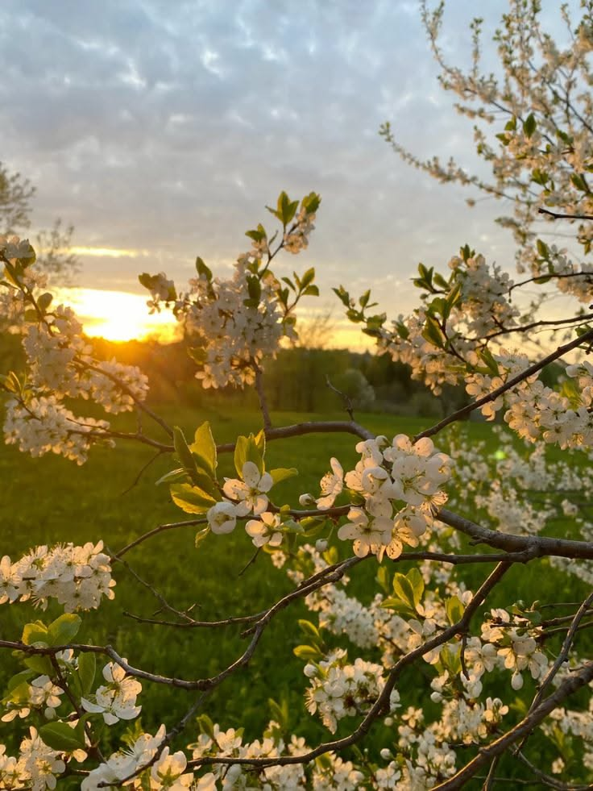

мне нравится весна, потому что в это время природа наконец-то просыпается после долгой зимней спячки. приятно наблюдать, как с каждым днём становится всё больше солнечного света, начинает таять надоевший снег, а на деревьях набухают первые зелёные почки. воздух наполняется особенной свежестью, и на улице начинает по-настоящему пахнуть теплом и переменами.
ещё это время года дарит невероятный прилив сил, энергии и отличного настроения. после серых холодных месяцев безумно радует возможность снять с себя тяжёлые зимние куртки и подолгу гулять по городу, слушая звонкое пение птиц. весна всегда ощущается как начало чего-то нового, светлого и вдохновляющего, когда хочется строить планы и просто радоваться жизни.